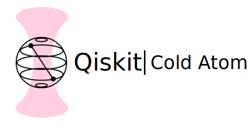

Qiskit Cold Atom API Reference¶
Qiskit Cold Atom module (qiskit_cold_atom)¶
The Qiskit Cold Atom module provides functionality to describe quantum systems of trapped cold atoms in a gate- and circuit-based framework.
Traditionally, each wire in a quantum circuit represents one qubit as the fundamental unit of information processing. Here, we extend this concept and allow wires to represent individual internal states of trapped cold atoms. This currently covers two settings, one for fermionic modes and one for spin modes.
In a fermionic setting, each wire of a quantum circuit represents an abstract fermionic mode in second
quantization which can either be occupied (1) or empty (0). Such systems are realized experimentally by
individual fermionic atoms trapped in arrays of optical tweezers. Circuit instructions and backends
to interact with and simulate such circuits are given by the qiskit_cold_atom.fermions module.
In a spin setting, each wire of a quantum circuit represents a quantum mechanical spin of a given length
\(S\). Upon measurement, each spin is measured in one of its \(2S+1\) internal basis states
labelled \(0\) to \(2S\), thus it can be thought of as a qudit with dimension \(d = 2S+1\).
This setting describes the collective spin of bosonic atoms trapped in a Bose-Einstein-condensate.
Circuit instructions and backends to interact with and simulate such circuits are provided by the
qiskit_cold_atom.spins module.
The quantum circuits that these systems can implement thus utilize a fundamentally different form of
quantum information processing compared to qubits. Therefore, the typical qubit gates can not be applied
to these circuits. Instead, the fermions and spin modules define their own gate sets which are defined
by their second-quantized Hamiltonians that generate the unitary gate. Note that loading the
qiskit_cold_atom.fermions or qiskit_cold_atom.spins module will decorate the
QuantumCircuit class in Qiskit by adding methods to call pre-defined fermionic and spin gates,
respectively.
To enable the control of real quantum hardware, the qiskit_cold_atom.providers
module contains a provider which enables access to cold atomic device backends.
The top-level classes and submodules of qiskit_cold_atom are:
Class for errors returned by Qiskit's Cold Atom module. |
Submodules¶
Module to study applications using cold atomic setups. |
|
Module to support fermionic circuits. |
|
Cold Atom Backend Provider |
|
Module to support spin circuits. |